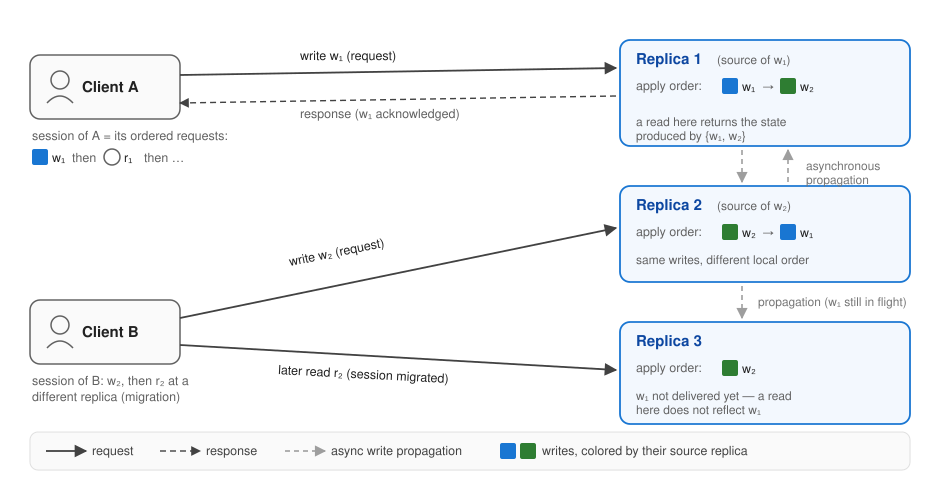

Consistency Models: Formal Definitions
XDN lets a developer pick the consistency model a replicated service provides. This page defines precisely what each model means, so that "causal" or "PRAM" on this site always refers to one exact guarantee. The same names are used with subtly different meanings across the literature; where definitions differ, we state the one XDN enforces and quote the original formulation for comparison.
Naming
The literature also calls these consistency properties, consistency semantics, or consistency levels. This site uses consistency model.
The setup
A replicated service consists of a few kinds of components. The figure shows them all in one deployment:

Replicas. A set of servers \(r_1, r_2, \ldots, r_n\), each holding a full copy of the service state.
Clients and requests. Clients issue requests: writes mutate service state and reads observe it. A request is invoked by the client and completes when its response returns.
Sessions. The ordered sequence of requests issued by one client is its session. A session is sticky while all its requests go to one replica; it migrates when a later request is served by a different replica (Client B in the figure).
Sources and source order. Each write is first executed at exactly one replica, called that write's source (in the figure, replica 1 is the source of \(w_1\)). The order in which a source executes its own writes is its source order.
Apply order. Writes propagate between replicas asynchronously. Each replica \(r\) applies writes, its own and those it receives, in a local total order: its apply order. A replica applies a write by re-executing it or by applying its statediff. Different replicas may apply the same writes in different orders (replicas 1 and 2 in the figure), and a replica may not yet have received some writes at all (replica 3).
Reads. A read served by replica \(r\) returns the state produced by the set of writes \(r\) has applied so far, its applied set.
Real-time order. Operation \(o_1\) precedes \(o_2\) in real time if \(o_1\)'s response returned before \(o_2\) was invoked.
Two families of models, plus convergence
Server-centric models (also called data-centric) constrain replicas' apply orders. Their classic definitions speak of "processes" or "processors," which map to replicas here; they have no notion of a client. Client-centric models constrain what one client session observes as it possibly moves across replicas. Convergence, whether replicas that stop receiving writes reach the same state, is a separate liveness concern, and is part of the definition only for eventual consistency. This taxonomy follows Tanenbaum & van Steen and Viotti & Vukolić.
The models below are ordered strongest to weakest, with the client-centric session guarantees last.
Linearizability
Definition (as enforced by XDN). An execution is linearizable iff there is a single total order \(T\) over all writes such that:
- \(T\) is consistent with every source order;
- \(T\) is consistent with real time: if \(w\) was acknowledged before \(w'\) was invoked, then \(w\) precedes \(w'\) in \(T\);
- every replica's apply order is consistent with \(T\); and
- every read reflects at least all writes acknowledged before the read was invoked.
Original definition — Herlihy & Wing, 1990
"Linearizability provides the illusion that each operation applied by concurrent processes takes effect instantaneously at some point between its invocation and its response, implying that the meaning of a concurrent object's operations can be given by pre- and post-conditions."
Formally: "A history H is linearizable if it can be extended (by appending zero or more response events) to some history H′ such that: L1: complete(H′) is equivalent to some legal sequential history S, and L2: <_H ⊆ <_S." Here <_H "captures the 'real-time' precedence ordering of operations in H."
— M. Herlihy and J. Wing. Linearizability: A Correctness Condition for Concurrent Objects. ACM TOPLAS 12(3), 1990.
Sequential consistency
Definition (as enforced by XDN). An execution is sequentially consistent iff there is a single total order \(T\) over all writes, consistent with every source order, such that every replica's apply order is consistent with \(T\).
This is exactly linearizability without the real-time clauses: all replicas agree on one write order, but a read may observe a stale prefix of it. What a client observes when its session migrates across replicas is a client-centric question; see the session guarantees below.
Original definition — Lamport, 1979
A multiprocessor is sequentially consistent if "the result of any execution is the same as if the operations of all the processors were executed in some sequential order, and the operations of each individual processor appear in this sequence in the order specified by its program."
— L. Lamport. How to Make a Multiprocessor Computer That Correctly Executes Multiprocess Programs. IEEE Trans. Computers C-28(9), 1979.
Causal consistency
Definition (as enforced by XDN). Let happens-before (\(\rightarrow\)) be the smallest transitive relation such that:
- \(w \rightarrow w'\) if both writes have the same source and \(w\) precedes \(w'\) in source order; and
- \(w \rightarrow w'\) if the source of \(w'\) had applied \(w\) before it executed \(w'\).
An execution is causal iff every replica's apply order is consistent with \(\rightarrow\). Writes unordered by \(\rightarrow\) (concurrent writes) may be applied in different orders at different replicas.
Clause 2 is the potential causality reading: since a service may read any part of its state while executing a request, every write the executing replica had already applied is conservatively treated as a potential cause. Enforcing this larger relation also enforces causality in the original read-based sense.
Original definition — Ahamad et al., 1995 (and common phrasings)
The original formal definition is due to Ahamad, Neiger, Burns, Kohli, and Hutto, Causal memory: definitions, implementation, and programming, Distributed Computing 9(1), 1995. It defines a writes-into order (a write writes-into the reads that return its value), a causality order (the transitive closure of per-process program order and writes-into), and requires for each process a serialization of its operations plus all writes that respects the causality order.
A common summary (Jepsen): "Causally-related operations should appear in the same order on all processes—though processes may disagree about the order of causally independent operations."
On the potential-causality reading (Bailis et al., Bolt-on Causal Consistency, SIGMOD 2013): "Under potential causality, all writes that could have influenced a write must be visible before the write is made visible."
PRAM (FIFO) consistency
Definition (as enforced by XDN). An execution is PRAM-consistent iff every replica applies the writes of each single source in that source's order. Writes of different sources may be applied in different relative orders at different replicas.
Original definition — Lipton & Sandberg, 1988
The original technical report defines PRAM operationally (TR p.4, §3):
"Let P₁, P₂, ..., P_k be processors that share a memory with locations 0,1,...,m−1. Assume that each processor has a local memory M_i ... The memory M_i is the i-th processor's view of the current state of the shared memory. Each processor executes read and write commands: (1) read(i). Processor P_j executes this operation by performing a normal read from location i from its own local memory M_j. (2) write(i,v). Processor P_j executes this operation by performing a local action and initializing a global action. Locally, it does a normal write to its memory M_j at location i with value v. Globally, it sends a message ⟨i,v⟩ to all the other processors. No acknowledgement of successful message transmission is expected nor is one ever received. As these messages ⟨i,v⟩ arrive at a processor they are automatically executed."
— R. Lipton and J. Sandberg. PRAM: A Scalable Shared Memory. Princeton TR CS-TR-180-88, 1988.
Note: the widely quoted abstract form, "writes done by a single process are seen by all other processes in the order in which they were issued," is the literature's later formulation (e.g., Mosberger 1993); the original defines PRAM by the pipelined mechanism above. Jepsen's phrasing: "Any pair of writes executed by a single process are observed (everywhere) in the order the process executed them; however, writes from different processes may be observed in different orders."
Eventual consistency
Definition (as enforced by XDN). An execution is eventually consistent iff, once no new write is executed at any replica, every replica eventually applies the same set of writes, and replicas that have applied the same set of writes are in the same state.
The second half is convergent conflict handling: concurrent writes must be resolved identically everywhere. Eventual consistency constrains no read in the meantime, and it is the only model on this page that requires propagation and convergence.
Original definitions — Vogels 2009; Bailis & Ghodsi 2013; COPS 2011
Vogels: "Eventual consistency. This is a specific form of weak consistency; the storage system guarantees that if no new updates are made to the object, eventually all accesses will return the last updated value." — W. Vogels. Eventually Consistent. CACM 52(1), 2009.
Bailis & Ghodsi: "...if no additional updates are made to a given data item, all reads to that item will eventually return the same value." — Eventual Consistency Today. ACM Queue 11(3), 2013.
Convergent conflict handling (COPS): "Convergent conflict handling requires that all conflicting puts be handled in the same manner at all replicas, using a handler function h. This handler function h must be associative and commutative..." — Lloyd et al. Don't Settle for Eventual. SOSP 2011.
Session guarantees (client-centric)
For a session \(s\) whose read \(R\) is served by a replica with applied write set \(D(R)\):
Read-your-writes (RYW) holds iff every write \(s\) issued before \(R\) is in \(D(R)\).
Monotonic reads (MR) holds iff for successive reads \(R_1, R_2\) of \(s\), \(D(R_1) \subseteq D(R_2)\).
Monotonic writes (MW) holds iff every replica applies \(s\)'s writes in \(s\)'s issue order.
Writes-follow-reads (WFR) holds iff for every write \(w'\) that \(s\) issues after a read \(R\), every replica that applies \(w'\) first applies the writes in \(D(R)\).
Each is a per-session guarantee; none constrains how replicas order writes of different sessions.
Original definitions — Terry et al., 1994
With DB(S,t) the writes received by server S by time t, RelevantWrites(S,t,R) the writes relevant to read R, and WriteOrder(W1,W2) meaning W1 is ordered before W2 at every server holding both:
"RYW-guarantee: If Read R follows Write W in a session and R is performed at server S at time t, then W is included in DB(S,t)."
"MR-guarantee: If Read R1 occurs before R2 in a session and R1 accesses server S1 at time t1 and R2 accesses server S2 at time t2, then RelevantWrites(S1,t1,R1) is a subset of DB(S2,t2)."
"WFR-guarantee: If Read R1 precedes Write W2 in a session and R1 is performed at server S1 at time t1, then, for any server S2, if W2 is in DB(S2) then any W1 in RelevantWrites(S1,t1,R1) is also in DB(S2) and WriteOrder(W1,W2)."
"MW-guarantee: If Write W1 precedes Write W2 in a session, then, for any server S2, if W2 in DB(S2) then W1 is also in DB(S2) and WriteOrder(W1,W2)."
— D. Terry, A. Demers, K. Petersen, M. Spreitzer, M. Theimer, B. Welch. Session Guarantees for Weakly Consistent Replicated Data. PDIS 1994.
Vogels's informal one-liners (2009): read-your-writes: "process A, after it has updated a data item, always accesses the updated value and will never see an older value." Monotonic reads: "If a process has seen a particular value for the object, any subsequent accesses will never return any previous values." Monotonic writes: "the system guarantees to serialize the writes by the same process."
How the models relate
Ordered by strength over the server-centric family:
with eventual consistency on the orthogonal convergence axis, and the session guarantees constraining single sessions rather than replicas (all four together, for all sessions, characterize causal consistency). See Viotti & Vukolić for a comprehensive survey.
References
- M. Herlihy, J. Wing. Linearizability: A Correctness Condition for Concurrent Objects. ACM TOPLAS 12(3), 1990.
- L. Lamport. How to Make a Multiprocessor Computer That Correctly Executes Multiprocess Programs. IEEE ToC C-28(9), 1979.
- M. Ahamad, G. Neiger, J. Burns, P. Kohli, P. Hutto. Causal Memory: Definitions, Implementation, and Programming. Distributed Computing 9(1), 1995.
- R. Lipton, J. Sandberg. PRAM: A Scalable Shared Memory. Princeton CS-TR-180-88, 1988.
- W. Vogels. Eventually Consistent. CACM 52(1), 2009.
- P. Bailis, A. Ghodsi. Eventual Consistency Today. ACM Queue 11(3), 2013.
- W. Lloyd, M. Freedman, M. Kaminsky, D. Andersen. Don't Settle for Eventual (COPS). SOSP 2011.
- D. Terry et al. Session Guarantees for Weakly Consistent Replicated Data. PDIS 1994.
- P. Viotti, M. Vukolić. Consistency in Non-Transactional Distributed Storage Systems. ACM CSUR 49(1), 2016.
- J. Brzeziński, C. Sobaniec, D. Wawrzyniak. From Session Causality to Causal Consistency. PDP 2004.